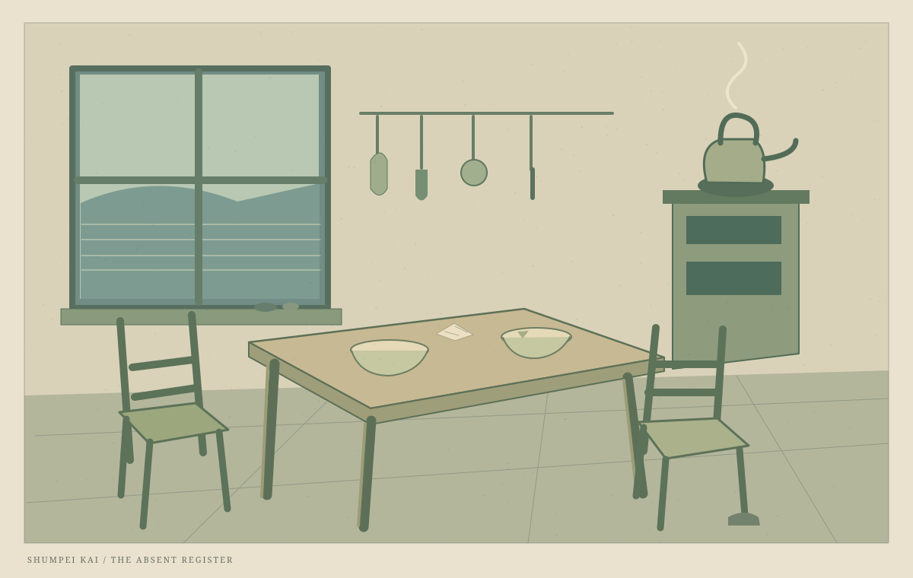

二脚の椅子
娘の手紙には書かれなかった、母の側の冬。

一
家へ戻ると、知らない女が戸口に立っていた。
泣いているようだったが、わたしの顔を見ると口を結んだ。その結び方が気にかかった。何かを思い出しかけたのではない。わたしも、泣くのをやめるときに同じことをするからだった。
「どちらさま」と尋ねた。女は答えるまでに、ひどく時間をかけた。寒そうだった。名乗る前に中へ入ってもらった。
二
女は、台所の道具の場所を知っていた。包丁を探さずに取り出し、戸棚の立て付けの悪いところを膝で押した。家を間違えているのは、こちらなのかもしれないと思った。
それを口にすると、女は帰ってしまう気がした。わたしは棚から椀を一つ出し、それからもう一つ出した。どちらを渡そうか迷うあいだに、女は欠けた方を取った。
「それでいいの」と聞くと、「こっちがいい」と言った。理由は聞かなかった。
三
三日目、向かいの家から椅子を借りた。女は床でもいいと言った。あなたに座ってほしいのではなく、わたしがひとりで座りたくないのだと、危うく言いそうになった。
女は夕方になると岬へ行った。仕事だと言った。帰りはいつも遅く、わたしが眠ったふりをしていると、火が消えているか二度確かめた。
ある晩、帰ってこなかった。食事を温め直し、鍋を下ろし、また火にかけた。名前を知らない相手を捜すには、港で何と尋ねればよいのだろう。考えているうちに朝になった。
四
女は明け方、足を濡らして戻った。灯りの修繕に手間取ったらしい。わたしは叱った。思ったより大きな声が出た。
女は謝らず、戸口に座って笑い始めた。笑いながら泣いていた。やはり知っている人なのかもしれない。そう思ったが、確かめなかった。
その日から、遅くなるときには女は戸口に石を一つ置いて出た。わたしは石を拾って窓辺へ移した。返事の代わりだった。
五
冬の終わりに、女が小さな紙を持ってきた。誰かに宛てた手紙らしい。読み上げてはくれなかった。ただ、書き間違えたところを切るから、鋏を貸してほしいと言った。
切り落とされた細い紙には、「母」とあった。
わたしはそれを竈へ入れられなかった。乾かした種を包むのに使った。春になったら二人で植えるつもりだったが、春のことを先に話すと、いなくなる人もいる。
その夜は、明日の食事のことだけを話した。
この短編の母の語りも創作です。娘の手紙の真偽を決める資料ではなく、同じ家にいたもう一人の経験として置かれています。 人物・土地・風習はすべて架空のものです。